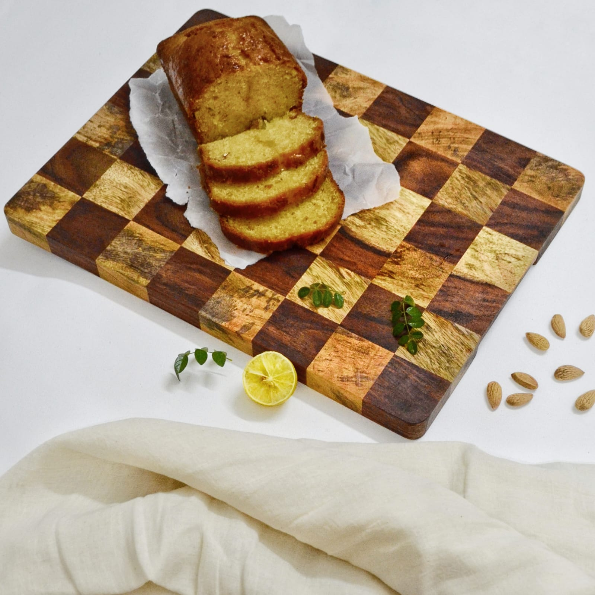
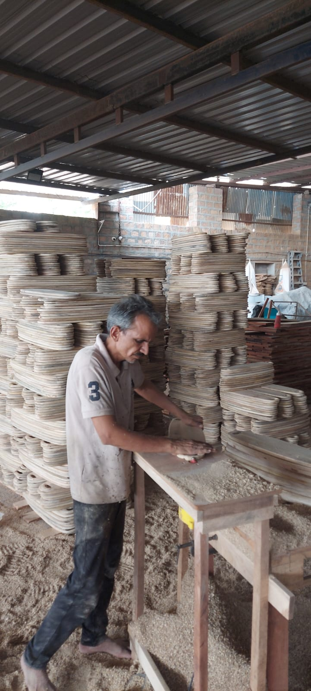
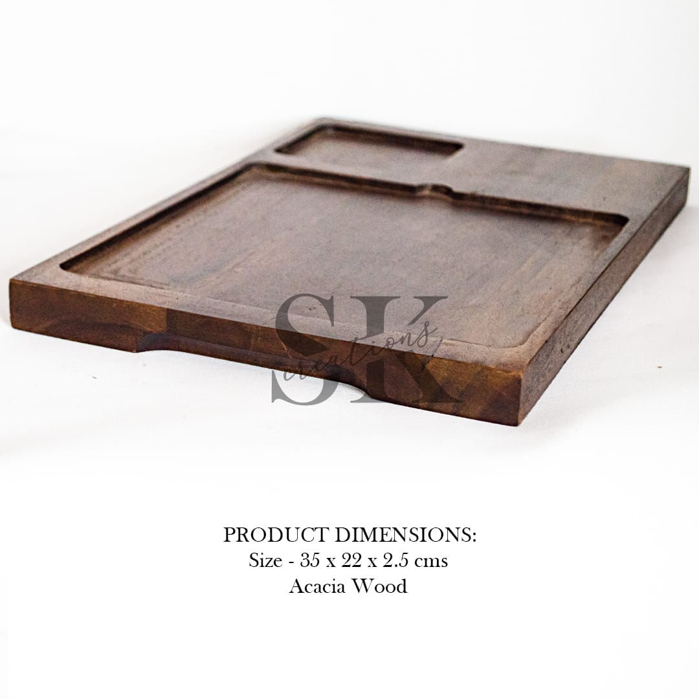

★★★★★
“Excellent response, wonderful material and timely delivery!! Much recommended!!”
SandhyaBengaluru, Karnataka
HANDCRAFTED IN JODHPUR
Thoughtfully handcrafted wooden utility and décor pieces that bring natural warmth, character and craftsmanship to your home.

S.K. CREATIONS
Traditional woodworking meets contemporary design in functional pieces created to be used, admired and enjoyed.
OUR COLLECTION
Choose a category to explore handcrafted wooden products from S.K. Creations.

OUR STORY
At S.K. Creations, we believe every piece of wood has its own character, warmth, and natural beauty. Our purpose is to transform that beauty into thoughtfully handcrafted products that become a meaningful part of your everyday life.
Based in Jodhpur, Rajasthan, we create a distinctive range of wooden utility, kitchenware, serveware, and home décor products by combining traditional woodworking craftsmanship with clean, contemporary design.
From elegant chopping boards and serving platters to plates and wooden dinnerware, every product is crafted with attention to detail, functionality, durability, and finish.
For our range of chopping boards, wooden plates, and dinnerware, we use food-grade mineral oil as the finishing treatment. This helps protect and enhance the natural beauty of the wood while providing a finish suitable for food-contact products.
Unlike conventional finishes that may rely on chemical polishes, we consciously choose a non-toxic, food-safe finish for products designed to come in contact with your food.
We believe the things you use every day should not only look beautiful—they should also be made thoughtfully.
Handcrafted in Jodhpur, Rajasthan.
BEHIND THE CRAFT
Every S.K. Creations piece passes through skilled hands. From shaping natural wood to careful finishing, take a closer look at the people, process and craftsmanship behind our creations in Jodhpur, Rajasthan.

THE S.K. CREATIONS EDIT
A closer look at natural textures, thoughtful details and handcrafted wooden pieces.



CUSTOMER FEEDBACK
Words of appreciation from customers across India.
“Excellent response, wonderful material and timely delivery!! Much recommended!!”
“Best work experience 💯”
“Authentic & Quality Products. Recommended”
“Amazing products”
GET IN TOUCH
Contact S.K. Creations for product availability, custom requirements and ordering enquiries.